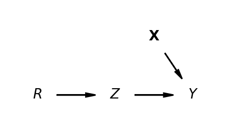
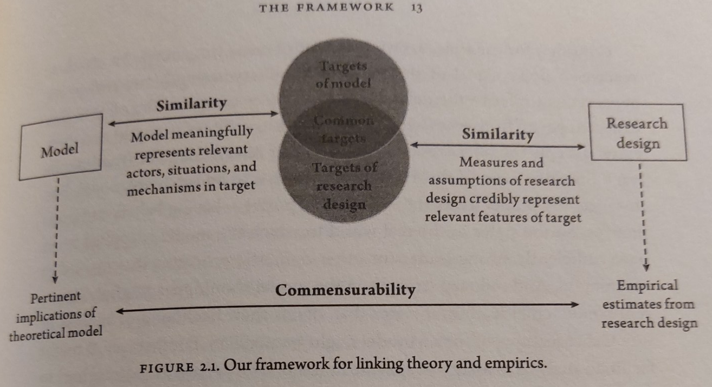

| motiv | harm | stabi | ppsych | ses | verbal | read | arith | spell | |
|---|---|---|---|---|---|---|---|---|---|
| 0 | -7.907122 | -5.075312 | -3.138836 | -17.800210 | 4.766450 | -3.633360 | -3.488981 | -9.989121 | -6.567873 |
| 1 | 1.751478 | -4.155847 | 3.520752 | 7.009367 | -6.048681 | -7.693461 | -4.520552 | 8.196238 | 8.778973 |
| 2 | 14.472570 | -4.540677 | 4.070600 | 23.734260 | -16.970670 | -3.909941 | -4.818170 | 7.529984 | -5.688716 |
| 3 | -1.165421 | -5.668406 | 2.600437 | 1.493158 | 1.396363 | 21.409450 | -3.138441 | 5.730547 | -2.915676 |
| 4 | -4.222899 | -10.072150 | -6.030737 | -5.985864 | -18.376400 | -1.438816 | -2.009742 | -0.623953 | -1.024624 |
Structural Causal Models in PyMC
Conditionalisation Strategies and Valid Causal Inference
Nathaniel Forde
Data Science @ Personio
and Open Source Contributor @ PyMC
2025-05-13
The Pitch
Structural causal models impose extra-statistical constraints on the derivation of valid causal claims from data.
These constraints can be understood concretely with reference to the SEM literature. We outline the development of structural causal models in the Bayesian setting highlighting the use of the do-operator on generative model graph structures.
Preliminaries
Who am I?
- I’m a data scientist at Personio
- Bayesian statistician,
- Reformed philosopher and logician.
- Website: https://nathanielf.github.io/
Code or it didn’t Happen
- The worked examples used here can be found here
- Download SEM Notebook
- SEM Data
My Website
Agenda
Abstract -> Concrete -> Code
- Valid Causal Structure
- Form and Content of Causal Inference
- Abstract Conception
- Concrete Conception
- The Bayesian Phrasing
- Implementation in Code
- Factor Structures
- Measurement Models: Abstract Conception
- Bayesian Phrasing: Concrete Example
- Bayesian Phrasing: Code in PyMC
- Model Fit and Diagnostics
- Structural Equation Models
- Adding Structural Components
- The SEM Model in PyMC
- Model Comparison: CFA and SEM
- Causal Estimands and the Do-Operator
- The Do-Calculus and Minimum Valid Structure
- What-if Structures and the Do-Operator
- The Do-Operator in PyMC
- Causal Estimands under Intervention
Valid Causal Structure
Form and Content of Causal Inference
Directed Acyclic Graphs and their Meaning
“Every proposition has a content and a form. We get the picture of the pure form if we abstract from the meaning of the single words, or symbols (so far as they have independent meanings)… By syntax in this general sense of the word I mean the rules which tell us in which connections only a word [makes] sense, thus excluding nonsensical structures.” - Wittgenstein Some Remarks on Logical Form
\[ \psi | \neg \psi | \psi \rightarrow \phi \]
Sets of Admissable Graphs and Well formed valid Fomulae
Abstract Conception
Non-Parametric Structural Diagrams

Non-parametric Structural Causal Models highlight the aspects of the Data Generating processes that threaten the valid construction of a causal claim.
\[ Y \sim f_{Y}(Z, X, U_{Y}) \] \[ Z \sim f_{Z}(X, IV, U_{Z})\] \[ X \sim f_{X}(U_{X})\] \[ IV \sim f_{IV}(U_{IV})\]
Concrete Conception
Parametric Approximation via Regression
\[ y \sim 1 + Z + u \] Regression Approximation to estimating valid coefficients in systems of simultaneous equation via 2SLS.
\[ y \sim 1 + \widehat{Z} + u \] \[ \widehat{Z} \sim 1 + IV + u \]
The Bayesian Phrasing
\[\begin{align*} \left( \begin{array}{cc} Y \\ Z \end{array} \right) & \sim \text{MultiNormal}(\color{green} \mu, \color{purple} \Sigma) \\ \color{green} \mu & = \left( \begin{array}{cc} \mu_{y} \\ \mu_{z} \end{array} \right) = \left( \begin{array}{cc} \beta_{00} + \color{blue} \beta_{01}Z ... \\ \beta_{10} + \beta_{11}IV ... \end{array} \right) \end{align*} \]
The treatment effect \(\color{blue}\beta_{01}\) of is the primary quantity of interest
\[ \color{purple} \Sigma = \begin{bmatrix} 1 & \color{purple} \sigma \\ \color{purple} \sigma & 1 \end{bmatrix} \] But the estimation depends on the multivariate realisation of the data
- Even the “simple” IV design is a structural causal model.
- The crucial component is the covariance structure of the joint-distribution and the instrument’s theoretical validity
- The Bayesian Estimation strategy estimates the IV model by seeking a parameterisation where the potential outcomes are conditionally exchangeable.
\[ p((y_{1}, z_{1})^{T} ....(y_{q}, z_{q})^{T}) = \dfrac{p(YZ | \theta)p(\theta)}{\sum p_{i}(YZ)} \]
\[ = \dfrac{p( (y_{1}, z_{1})^{T} ....(y_{q}, z_{q})^{T}) | \Sigma , \beta)p(\Sigma , \beta) }{\sum p_{i}(YZ)} \]
Implementation in Code
PyMC model context
## PyMC model context
with pm.Model() as iv_model:
# Initialising Regression Priors
beta_t = pm.Normal(
name="beta_t",
mu=priors["mus_t"],
sigma=priors["sigma_t"],
dims="instruments")
beta_z = pm.Normal(
name="beta_z",
mu=priors["mus_z"],
sigma=priors["sigma_z"],
dims="covariates")
# Covariance Prior Parameters
sd_dist = pm.Exponential.dist(priors["lkj_sd"], shape=2)
chol, corr, sigmas = pm.LKJCholeskyCov(
name="chol_cov",
eta=priors["eta"],
n=2,
sd_dist=sd_dist,
)
# compute and store the covariance matrix
pm.Deterministic(name="cov",
var=pt.dot(l=chol, r=chol.T))
# --- Parameterization ---
# focal regression
mu_y = pm.Deterministic(name="mu_y",
var=pm.math.dot(X, beta_z))
# instrumental regression
mu_t = pm.Deterministic(name="mu_t",
var=pm.math.dot(Z, beta_t))
# Stack regressions for MvNormal
mu = pm.Deterministic(name="mu",
var=pt.stack(tensors=(mu_y, mu_t),
axis=1))
# --- Likelihood ---
pm.MvNormal(
name="likelihood",
mu=mu,
chol=chol,
observed=np.stack(arrays=(y, t), axis=1),
shape=(X.shape[0], 2),
)Functional Form and the State of the World
Credible Maps
Causal Structural Models generate valid causal claims just when:
- the mathematical model is apt to account for risks of confounding in the assumed data generating process
- the model parameters or theoretical estimands can be properly identified and estimated with the data available.
- the assumed data generating process is a close enough approximation of the actual process
- The set of admissable causal claims is constrained by the substantive extra-statistical requirement to credibly map model to the world

\[ \Bigg( \begin{array}{cc} Y \sim f_{Y}(Z, X, U_{Y}) \\ Z \sim f_{Z}(X, IV, U_{Z}) \end{array} \Bigg) \approxeq \Bigg[ \begin{array}{cc} Y \sim 1 + \widehat{Z} + u \\ \widehat{Z} \sim 1 + IV + u \end{array} \Bigg] \\ \approxeq \dfrac{p( (y_{1}, z_{1})^{T} ....(y_{q}, z_{q})^{T}) | \color{purple}\Sigma ,\color{blue}\beta \color{black} )p(\color{purple}\Sigma ,\color{blue}\beta \color{black}) }{\sum p_{i}(YZ)} \]
Factor Structures
Confirmatory Factor Structures
and Conditional Exchangeability
Assumptions of exchangeability in survey measurement and De-Finetti’s theorem \[p(Y,T, X_{1}…,X_n) = \int p(Y, T, X_{1} ... X_n ∣\theta)p(\theta)d(\theta)\]
ensures the observed data can be represented as conditionally independent mixture distribution where in general:
\[X_{i} \perp\!\!\!\!\perp X_{j} | \theta \text { } \forall i \neq j\]
and in paticular latent factors \(\Lambda\) are hypothetical common causes argued to induce conditional exchangeability among the observed data.
\[ Y(0), Y(1) \perp\!\!\!\!\perp T | \Lambda\]
Factor Structures as Measurement Models
\[ ADJUST \sim f_{ADJUST}(motiv, harm, stabi, U) \] \[ RISK \sim f_{RISK}(ppsych, ses, verbal, U)\] \[ ACHIEVE \sim f_{ACHIEVE}(read, arith, spell, U)\]
Non-parametric phrasing of SCMs under-specifies the relations of interest.
CFA models estimates the multivariate correlation structure while imposing the focal causal structure and dependencies to “hide” detail in measurement error.
Measurement Models
and Structured Priors
The Confirmatory Factor Model can also be phrased in the Bayesian way.
\[p(\mathbf{x_{i}}^{T}.....\mathbf{x_{q}}^{T} | \text{Ksi}, \Psi, \tau, \Lambda) \sim Normal(\tau + \Lambda\cdot \text{Ksi}, \Psi)\]
\[ \lambda_{11} ..... \lambda_{21} ..... \lambda_{31} \in \Lambda \]
Measurement Model Graph
Measurement Models in PyMC
coords = {
"obs": list(range(len(df))),
"indicators": ["motiv", "harm", "stabi", "verbal", "ses", "ppsych", "read", "arith", "spell"],
"indicators_1": ["motiv", "harm", "stabi"],
"indicators_2": ["verbal", "ses", "ppsych"],
"indicators_3": ["read", "arith", "spell"],
"latent": ["adjust", "risk", "achieve"],
}
def make_lambda(indicators, name='lambdas1', priors=[1, 10]):
""" Takes an argument indicators which is a string in the coords dict"""
temp_name = name + '_'
lambdas_ = pm.Normal(temp_name, priors[0], priors[1], dims=(indicators))
# Force a fixed scale on the factor loadings for factor 1
lambdas_1 = pm.Deterministic(
name, pt.set_subtensor(lambdas_[0], 1), dims=(indicators)
)
return lambdas_1
obs_idx = list(range(len(df)))
with pm.Model(coords=coords) as model:
# Set up Factor Loadings
lambdas_1 = make_lambda('indicators_1', 'lambdas1')
lambdas_2 = make_lambda('indicators_2', 'lambdas2', priors=[1, 2])
lambdas_3 = make_lambda('indicators_3', 'lambdas3')
# Specify covariance structure between latent factors
sd_dist = pm.Exponential.dist(1.0, shape=3)
chol, _, _ = pm.LKJCholeskyCov("chol_cov", n=3, eta=2, sd_dist=sd_dist, compute_corr=True)
ksi = pm.MvNormal("ksi", 0, chol=chol, dims=("obs", "latent"))
# Construct Pseudo Observation matrix based on Factor Loadings
m1 = ksi[obs_idx, 0] * lambdas_1[0]
m2 = ksi[obs_idx, 0] * lambdas_1[1]
m3 = ksi[obs_idx, 0] * lambdas_1[2]
m4 = ksi[obs_idx, 1] * lambdas_2[0]
m5 = ksi[obs_idx, 1] * lambdas_2[1]
m6 = ksi[obs_idx, 1] * lambdas_2[2]
m7 = ksi[obs_idx, 2] * lambdas_3[0]
m8 = ksi[obs_idx, 2] * lambdas_3[1]
m9 = ksi[obs_idx, 2] * lambdas_3[2]
mu = pm.Deterministic("mu", pm.math.stack([m1, m2, m3, m4, m5, m6, m7, m8, m9]).T)
## Error Terms
Psi = pm.InverseGamma("Psi", 2, 13, dims="indicators")
# Likelihood
_ = pm.Normal(
"likelihood",
mu,
Psi,
observed=df[coords['indicators']].values,
)
Model Estimates: Factor Loadings

- The weights accorded to each of the indicator metrics on each of the specified factors are scaled.
- Consistency in the factor loadings is a gauge of factor coherence.
- Invariance of the loading scale across groups supports the argument to robust constructs.
Model Fit: Covariance Structures
The differences between the sample covariance and model predicted covariances are small.
Model Fit: Posterior Predictive Checks
The model can successfully retrodict the observed data, indicating good model fit.
Model Implications: Latent Scores

- Bayesian Models sample the Latent constructs
- Assess the measurement profile of individual outliers under intervention.
- Allows us to interrogate what are the relations between these Latent components?
- How do thet vary under pressure?
Structural Equation Models
Adding Structural Components
Regression Structures are Overlaid
adjust =~ motiv + harm + stabi
risk =~ verbal + ses + ppsych
achieve =~ read + arith + spell
adjust ~ risk
achieve ~ adjust + risk
\[SEM : \underbrace{\text{Ksi}^{*}}_{latent} = \underbrace{\mathbf{B}\text{Ksi}}_{structural \\ component} + \underbrace{\Lambda\cdot \text{Ksi}}_{measurement \\ component}\]
\[CFA : \underbrace{\text{Ksi}^{*}}_{latent} = \underbrace{\mathbf{0}\text{Ksi}}_{structural \\ component} + \underbrace{\Lambda\cdot \text{Ksi}}_{measurement \\ component}\]
The Structural Matrix
\[ \overbrace{\text{Ksi}}^{latent} = \begin{bmatrix} \overbrace{2.5}^{adjust} & \overbrace{3.2}^{risk} & \overbrace{7.3}^{achieve} \\ ... & ... & ... \\ ... & ... & ... \\ ... & ... \\ 3.9 & ...\end{bmatrix} \begin{bmatrix} 0 & \beta_{12} & \beta_{13} \\ \beta_{21} & 0 & \beta_{23} \\ \beta_{31} & \beta_{32} & 0 \end{bmatrix} = \underbrace{\mathbf{B}}_{Regression \\ Coefficients} \]
The Structural Matrix
The specification of the structural matrix encodes the candidate regression relations which are to be evaluated in the SEM fit.
\[ \overbrace{\text{Ksi}}^{latent} = \begin{bmatrix} \overbrace{2.5}^{adjust} & \overbrace{3.2}^{risk} & \overbrace{7.3}^{achieve} \\ ... & ... & ... \\ ... & ... & ... \\ ... & ... \\ 3.9 & ...\end{bmatrix} \begin{bmatrix} 0 & 0 & \color{blue}{\beta_{13}} \\ \color{blue}{\beta_{21}} & 0 & \color{blue}{\beta_{23}} \\ 0 & 0 & 0 \end{bmatrix} = \underbrace{\mathbf{B}}_{Regression \\ Coefficients} \]
adjust ~ risk
achieve ~ adjust + risk
The SEM Model in PyMC
Defining the DAG
coords = {
"obs": list(range(len(df))),
"indicators": ["motiv", "harm", "stabi", "verbal", "ses", "ppsych", "read", "arith", "spell"],
"indicators_1": ["motiv", "harm", "stabi"],
"indicators_2": ["verbal", "ses", "ppsych"],
"indicators_3": ["read", "arith", "spell"],
"latent": ["adjust", "risk", "achieve"],
"paths": ["risk->adjust", "risk-->achieve", "adjust-->achieve"]
}
obs_idx = list(range(len(df)))
with pm.Model(coords=coords) as model:
# Set up Factor Loadings
lambdas_1 = make_lambda('indicators_1', 'lambdas1', priors=[1, .5]) #adjust
lambdas_2 = make_lambda('indicators_2', 'lambdas2', priors=[1, .5]) # risk
lambdas_3 = make_lambda('indicators_3', 'lambdas3', priors=[1, .5]) # achieve
# Specify covariance structure between latent factors
sd_dist = pm.Exponential.dist(1.0, shape=3)
chol, _, _ = pm.LKJCholeskyCov("chol_cov", n=3, eta=2, sd_dist=sd_dist, compute_corr=True)
ksi = pm.MvNormal("ksi", 0, chol=chol, dims=("obs", "latent"))
## Build Regression Components
coefs = pm.Normal('betas', 0, .5, dims='paths')
zeros = pt.zeros((3, 3))
## adjust ~ risk
zeros1 = pt.set_subtensor(zeros[1, 0], coefs[0])
## achieve ~ risk + adjust
zeros2 = pt.set_subtensor(zeros1[1, 2], coefs[1])
coefs_ = pt.set_subtensor(zeros2[0, 2], coefs[2])
structural_relations = pm.Deterministic('endogenous_structural_paths',
pm.math.dot(ksi, coefs_))
# Construct Pseudo Observation matrix based on Factor Loadings
m1 = ksi[obs_idx, 0] * lambdas_1[0] + structural_relations[obs_idx, 0] #adjust
m2 = ksi[obs_idx, 0] * lambdas_1[1] + structural_relations[obs_idx, 0] #adjust
m3 = ksi[obs_idx, 0] * lambdas_1[2] + structural_relations[obs_idx, 0] #adjust
m4 = ksi[obs_idx, 1] * lambdas_2[0] + structural_relations[obs_idx, 1] #risk
m5 = ksi[obs_idx, 1] * lambdas_2[1] + structural_relations[obs_idx, 1] #risk
m6 = ksi[obs_idx, 1] * lambdas_2[2] + structural_relations[obs_idx, 1] #risk
m7 = ksi[obs_idx, 2] * lambdas_3[0] + structural_relations[obs_idx, 2] #achieve
m8 = ksi[obs_idx, 2] * lambdas_3[1] + structural_relations[obs_idx, 2] #achieve
m9 = ksi[obs_idx, 2] * lambdas_3[2] + structural_relations[obs_idx, 2] #achieve
mu = pm.Deterministic("mu", pm.math.stack([m1, m2, m3, m4, m5, m6, m7, m8, m9]).T)
## Error Terms
Psi = pm.InverseGamma("Psi", 2, 13, dims="indicators")
# Likelihood
_ = pm.Normal(
"likelihood",
mu,
Psi,
observed=df[coords['indicators']].values,
)
Model Comparison
Local and Global Fit

SEM model achieves better performance on the local and global model checks than the CFA model
Causal Estimands and the Do-Operator
The graph algebra of the do-calculus sets rules on admissable structures required to warrant valid causal claims when accounting for different species of confounding.
They complement the development and analysis of SEM models, providing minimalist admissablility conditions for a causal interpretation of these structural relations.
The substantive justification of the causal claims implicit in a SEM model need to be made more explicitly by the researcher with reference to evaluation of model fit to data by comparing to competing models.
What-if Structures and the Do-Operator
“[T]ypically the causal assumptions are less established, though they should be defensible and consistent with the current state of knowledge. The analysis is done under the speculation of “what if these causal assumptions were true.” These latter analyses are useful because there are often ways of testing the model, or parts of it. These tests can be helpful in rejecting one or more of the causal assumptions, thereby revealing flaws in specification. Of course, passing these tests does not prove the validity of the causal assumptions, but it lends credibility to them.”
- Bollen and Pearl in Eight myths about causality and structural equation models

The Do-Operator uses graph mutilation techniques to interrogate the impact of different data generating conditions including the analysis of causal claims.
Graph Mutilation in PyMC
Causal Estimands under Intervention
model_beta0 = do(model_sem, {"betas": [0, 0 , 0]}, prune_vars=True)
model_beta1 = do(model_sem, {"betas": [.6, .3, .7]}, prune_vars=True)
# Sample new data assuming path parameters 0: P(Y | c, do(beta=0))
idata_z0 = pm.sample_posterior_predictive(
idata_sem,
model=model_beta0,
predictions=False,
var_names=["likelihood", "betas",],
)
# Sample new data assuming substantive specification: P(Y | c, do(z=[.6, .3, .7]))
idata_z1 = pm.sample_posterior_predictive(
idata_sem,
model=model_beta1,
predictions=False,
var_names=["likelihood", "betas"],
)Causal Estimands under Intervention
\[ E\Big[(Y| do(\beta=0)) - (Y | do(\beta \neq 0) \Big] \]
Model Fit: Sensitivity under Intervention
The plots are scaled identically here between -1 and 1. Highlighting significantly worse model fit under implausibly zero’d out beta coefficients.
Conclusion
Credibility versus Certification
“SEM is an inference engine that takes in two inputs, qualitative causal assumptions and empirical data, and derives two logical consequences of these inputs: quantitative causal conclusions and statistical measures of fit for the testable implications of the assumptions. Failure to fit the data casts doubt on the strong causal assumptions of zero coefficients or zero covariances and guides the researcher to diagnose, or repair the structural misspecifications. Fitting the data does not “prove” the causal assumptions, but it makes them tentatively more plausible.”
- Bollen and Pearl in Eight myths about causality and structural equation models

SCMS in PyMC